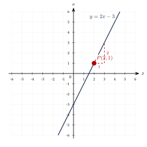
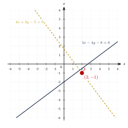
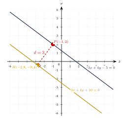

Capítulo 31
La recta
UNAM IPN CENEVAL
La recta es una de las figuras fundamentales de la geometría analítica. Su posición en el plano puede describirse mediante una ecuación, mientras que su inclinación se representa mediante la pendiente.
En este capítulo estudiarás las principales formas de la ecuación de una recta, las condiciones de paralelismo y perpendicularidad, y las fórmulas para calcular la distancia de un punto a una recta y la distancia entre dos rectas paralelas.
31.1 Elementos de una recta#
Una recta es un conjunto infinito de puntos alineados que se extiende indefinidamente en dos direcciones.
En el plano cartesiano, una recta puede representarse mediante una ecuación de primer grado en las variables \(x\) y \(y\).
La pendiente de una recta no vertical mide su inclinación respecto del eje positivo \(x\).
Si una recta pasa por los puntos:
y:
con \(x_1\neq x_2\), su pendiente es:
El signo de la pendiente describe el comportamiento de la recta:
- si: \[m>0,\] la recta es creciente;
- si: \[m<0,\] la recta es decreciente;
- si: \[m=0,\] la recta es horizontal;
- si la recta es vertical, su pendiente no está definida.
La pendiente de una recta vertical no es infinita.
En una recta vertical:
por lo que la fórmula de la pendiente produciría una división entre cero. Por esta razón, la pendiente no está definida.
31.2 Formas de la ecuación de la recta#
31.2.1 Forma punto-pendiente#
Si una recta pasa por el punto:
y tiene pendiente \(m\), su ecuación es:
La forma punto-pendiente es especialmente útil cuando se conoce:
- un punto de la recta;
- la pendiente de la recta.
31.2.2 Forma pendiente-ordenada al origen#
Si una recta no vertical tiene pendiente \(m\) y corta el eje \(y\) en el punto:
su ecuación es:
El número \(b\) se denomina ordenada al origen o intersección con el eje \(y\).
En la ecuación:
el coeficiente \(m\) determina la inclinación de la recta y el valor \(b\) determina el punto en el que la recta corta el eje \(y\).
31.2.3 Forma de dos puntos#
La recta que pasa por:
y:
con \(x_1\neq x_2\), tiene pendiente:
Por tanto, su ecuación puede escribirse como:
La fórmula anterior no se utiliza cuando:
En ese caso, la recta es vertical y su ecuación es:
31.2.4 Forma simétrica o de interceptos#
Si una recta corta el eje \(x\) en:
y el eje \(y\) en:
con:
su ecuación es:
En la forma simétrica:
el valor \(a\) es la intersección con el eje \(x\) y el valor \(b\) es la intersección con el eje \(y\).
31.2.5 Forma general#
Toda recta puede escribirse en la forma:
donde \(A\), \(B\) y \(C\) son constantes reales y:
Si:
y:
entonces:
Por tanto:
La pendiente es:
y la ordenada al origen es:
Si \(B=0\), la ecuación general se reduce a:
Por tanto:
que representa una recta vertical.
31.2.6 Rectas horizontales y verticales#
Una recta horizontal tiene pendiente:
Su ecuación es:
donde \(k\) es una constante.
Una recta vertical tiene pendiente no definida.
Su ecuación es:
donde \(k\) es una constante.
31.3 Determinación de la ecuación de una recta#
Encuentra la ecuación de la recta que pasa por:
y tiene pendiente:
Ver solución
Utilizamos la forma punto-pendiente:
Sustituimos:
Desarrollamos:
La forma pendiente-ordenada es:
Pasamos todos los términos al primer miembro:
Por tanto, la forma general es:

Encuentra la ecuación de la recta que pasa por:
y:
Ver solución
Calculamos la pendiente:
Usamos la forma punto-pendiente con \(A(-3,-2)\):
Entonces:
La forma pendiente-ordenada es:
La forma general es:

Encuentra la ecuación de la recta con pendiente:
y ordenada al origen:
Ver solución
Utilizamos:
Sustituimos:
La forma general es:

Encuentra la ecuación de la recta que corta el eje \(x\) en:
y el eje \(y\) en:
Ver solución
Utilizamos la forma simétrica:
Sustituimos:
Por tanto:
Multiplicamos por \(12\):
La forma general es:

31.4 Conversión entre las formas de una recta#
Convierte la ecuación:
a la forma pendiente-ordenada al origen.
Ver solución
Despejamos \(y\):
Por tanto:
y:
Convierte:
a la forma general.
Ver solución
Multiplicamos por \(5\):
Pasamos los términos al primer miembro:
31.5 Paralelismo y perpendicularidad#
Dos rectas no verticales distintas son paralelas si y solo si tienen la misma pendiente:
Las rectas verticales también son paralelas entre sí.
Si dos rectas tienen la misma pendiente y la misma ordenada al origen, no son rectas paralelas distintas: son la misma recta.
Dos rectas no verticales con pendientes distintas de cero son perpendiculares si y solo si:
De manera equivalente:
Una recta horizontal y una recta vertical son perpendiculares, aunque la pendiente de la recta vertical no esté definida.
Encuentra la pendiente de cualquier recta paralela a la que pasa por:
y:
Ver solución
Calculamos la pendiente:
Toda recta paralela tiene la misma pendiente:
Determina la pendiente de una recta perpendicular a la recta que pasa por:
y:
Ver solución
La pendiente de la recta dada es:
La pendiente perpendicular es el recíproco negativo:
Por tanto:
Encuentra la ecuación de la recta que pasa por:
y es perpendicular a:
Ver solución
Despejamos \(y\) en la recta dada:
La pendiente de la recta dada es:
Por tanto, la pendiente perpendicular es:
Utilizamos la forma punto-pendiente:
Entonces:
Multiplicamos por \(3\):
Pasamos todos los términos al primer miembro:

31.6 Ángulo entre dos rectas#
Sean dos rectas no verticales con pendientes \(m_1\) y \(m_2\).
El ángulo agudo \(\theta\) entre ellas satisface:
si:
Si:
entonces:
Por tanto, las rectas son perpendiculares y forman un ángulo de:
31.7 Distancia de un punto a una recta#
La distancia del punto:
a la recta:
es:
La distancia de un punto a una recta es la longitud del segmento perpendicular trazado desde el punto hasta la recta.
El valor absoluto del numerador garantiza que la distancia sea no negativa.
Calcula la distancia del punto:
a la recta:
Ver solución
Identificamos:
Sustituimos en la fórmula:
La distancia es:

31.8 Distancia entre rectas paralelas#
Sean las rectas paralelas:
y:
La distancia entre ellas es:
Antes de aplicar la fórmula, los coeficientes de \(x\) y \(y\) deben ser exactamente iguales en ambas ecuaciones.
Si las ecuaciones tienen coeficientes proporcionales, primero debe multiplicarse o dividirse una de ellas para igualar los coeficientes.
Encuentra la distancia entre las rectas paralelas:
y:
Ver solución
Identificamos:
Aplicamos la fórmula:
La distancia entre las rectas es:
La distancia debe medirse mediante un segmento perpendicular a ambas rectas:

El segmento de distancia no tiene que ser vertical ni horizontal.
Debe ser perpendicular a las dos rectas. En el ejemplo, el vector:
es normal a ambas rectas, pues coincide con los coeficientes de \(x\) y \(y\).
31.9 Resumen de fórmulas#
Las fórmulas principales del capítulo son:
Forma punto-pendiente
\[y-y_1 = m(x-x_1).\]Forma pendiente-ordenada
\[y=mx+b.\]Forma de dos puntos
\[y-y_1 = \frac{y_2-y_1}{x_2-x_1} (x-x_1).\]Forma simétrica
\[\frac{x}{a} + \frac{y}{b} = 1.\]Forma general
\[Ax+By+C=0.\]Pendiente de la forma general
\[m=-\frac{A}{B}, \qquad B\neq0.\]Rectas paralelas
\[m_1=m_2.\]Rectas perpendiculares
\[m_1m_2=-1.\]Distancia de un punto a una recta
\[d = \frac{ |Ax_0+By_0+C| }{ \sqrt{A^2+B^2} }.\]Distancia entre rectas paralelas
\[d = \frac{ |C_2-C_1| }{ \sqrt{A^2+B^2} }.\]
31.10 Ejercicios propuestos#
Encuentra la ecuación de la recta que pasa por:
y tiene pendiente:
Ver solución
Encuentra la ecuación de la recta que pasa por:
y:
Ver solución
\[m = \frac{-2 - 5}{3 - 4} = \frac{-7}{-1} = 7.\] \[y - 5 = 7(x - 4) \Longrightarrow y - 5 = 7x - 28 \Longrightarrow 7x - y - 23 = 0.\]
Encuentra la ecuación de la recta con pendiente:
y ordenada al origen:
Ver solución
Encuentra la ecuación de la recta que corta el eje \(x\) en:
y el eje \(y\) en:
Ver solución
Forma simétrica con \(a = 6\), \(b = -4\): \[\frac{x}{6} - \frac{y}{4} = 1 \Longrightarrow 2x - 3y - 12 = 0.\]
Determina la pendiente de una recta paralela a la que pasa por:
y:
Ver solución
\[m = \frac{-4 - (-5)}{3 - 2} = 1.\] La paralela tiene la misma pendiente: \(m = 1\).
Determina la pendiente de una recta perpendicular a la que pasa por:
y:
Ver solución
\[m = \frac{7 - 11}{-1 - (-3)} = \frac{-4}{2} = -2.\] La perpendicular tiene pendiente \(m_\perp = \dfrac{1}{2}\).
Encuentra la ecuación de la recta que pasa por:
y es paralela a:
Ver solución
\(3x - 5y + 15 = 0 \Longrightarrow y = \dfrac{3}{5}x + 3\). La paralela tiene pendiente \(m = \dfrac{3}{5}\): \[y - 7 = \frac{3}{5}(x - 2) \Longrightarrow 5y - 35 = 3x - 6 \Longrightarrow 3x - 5y + 29 = 0.\]
Calcula la distancia del punto:
a la recta:
Ver solución
Calcula la distancia del punto:
a la recta:
Ver solución
Encuentra la distancia entre las rectas paralelas:
y:
Ver solución
Tomamos un punto de la primera recta, por ejemplo \((3, 0)\) (ya que \(2(3) + 3(0) - 6 = 0\)): \[d = \frac{|2(3) + 3(0) + 4|}{\sqrt{4 + 9}} = \frac{|{10}|}{\sqrt{13}} = \frac{10}{\sqrt{13}} \approx 2.77.\]